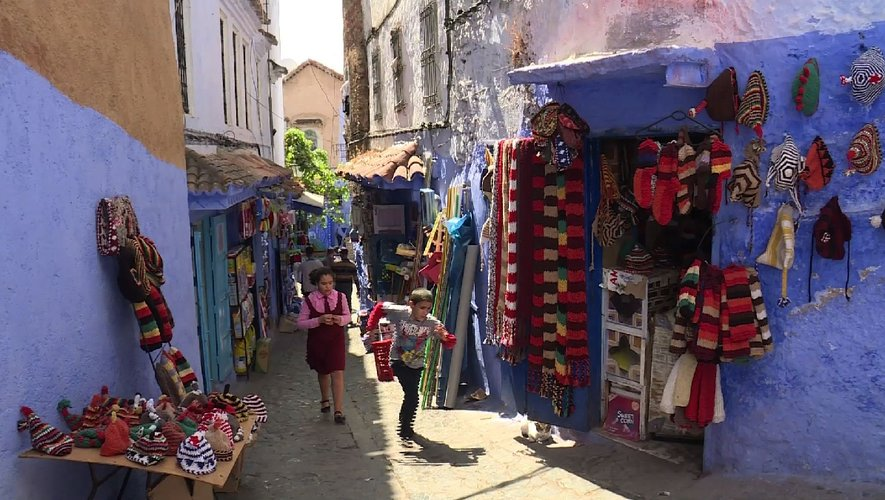

Une immersion dans le bleu de Chefchaouen
Publié le 15 Novembre 2024 par Asmae
L'arrivée : Dès mes premiers pas dans la médina, j'ai été frappée par le silence. Contrairement à l'effervescence de Marrakech, Chefchaouen respire la sérénité. L'air frais des montagnes du Rif se mélange à l'odeur du pain chaud sortant des fours traditionnels en terre cuite.
Le labyrinthe : Chaque ruelle est une surprise. Pourquoi ce bleu ? Certains disent que c'est pour éloigner les moustiques, d'autres y voient une tradition spirituelle. Ce qui est sûr, c'est que la lumière y est magique au coucher du soleil. J'ai passé des heures à grimper vers la mosquée espagnole pour voir la ville s'illuminer comme un saphir posé sur la montagne.
"Ici, le temps ne compte plus. On s'assoit à la Place Outa el-Hammam, on commande un thé à la menthe avec pignons de table, et on regarde simplement la vie passer."
Mon conseil secret : Levez-vous à 7h du matin. Vous aurez la médina pour vous seule, avant l'arrivée des touristes. C'est à ce moment-là que les habitants ouvrent leurs portes et que les couleurs sont les plus vibrantes.
📌 Carnet Pratique
- Où manger : Le restaurant Bab Ssour pour une bissara authentique.
- À ne pas manquer : La source Ras El Ma pour voir les femmes laver les tapis à la main.
← Retour aux récits